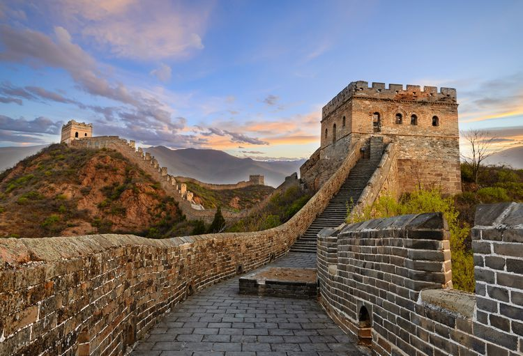
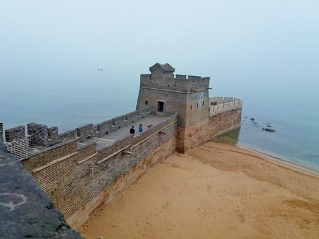

The Great Wall of China
About the Great Wall of China
Welcome to the Great Wall of China, one of the most iconic and monumental human-made structures in the world. Stretching over 13,000 miles (21,196 kilometers) across northern China, the Great Wall is a testament to the ancient engineering marvels of the Chinese civilization.
Constructed over several centuries, starting in the 3rd century BCE, the Great Wall served as a formidable defensive fortification, protecting the Chinese empire from invasions and nomadic tribes. Its construction involved the labor of millions of workers, utilizing various materials such as stone, brick, tamped earth, and wood.
The Great Wall is not a singular structure but rather a series of interconnected walls, towers, and fortifications built across diverse terrains. It represents the rich cultural and historical legacy of China, reflecting the ingenuity, determination, and military strategies of the ancient Chinese dynasties.
Today, the Great Wall of China stands as a UNESCO World Heritage Site and a symbol of China's national identity. Visitors can explore sections of the wall, marvel at the panoramic vistas, and contemplate the immense historical significance of this remarkable structure.
 